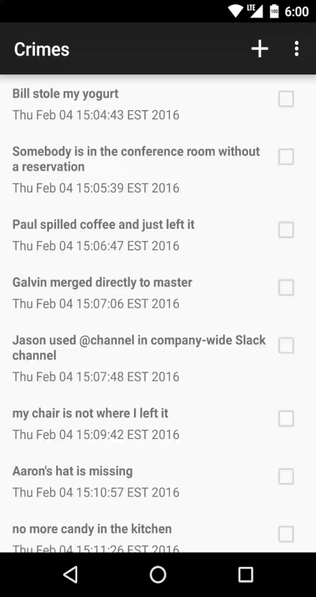

RecyclerView MultiSelect
RecyclerView MultiSelect is a tool to help implement single or multichoice selection on RecyclerView items. It does not provide the same interface as ListView's setChoiceMode(), but can do everything setChoiceMode() does. It is also small with a limited set of responsibilities, which means it should be suitable for coercing into off label uses.

Overview

Basics
The MultiSelector is the core object that manages multi-selection. However, you have to tell MultiSelector when to enter/leave selection mode.
MultiSelector multiSelector = new MultiSelector();
multiSelector.setSelectable(true); // enter selection mode
MultiSelector multiSelector = new MultiSelector();
multiSelector.setSelectable(false); // leave selection mode
You must also tell MultiSelector when an item has been selected.
MultiSelector multiSelector = new MultiSelector();
multiSelector.setSelectable(true); // enter selection mode
multiSelector.setSelected(myViewHolder, true); // set myViewHolder to selected
Your ViewHolder must implement the SelectableHolder interface. This library provides a default implementation called SwappingHolder that handles the visuals of being selected/unselected.
private MultiSelector mMultiSelector = new MultiSelector();
private class MyViewHolder extends SwappingHolder
implements View.OnLongClickListener { // (1)
public MyViewHolder(View itemView) {
super(itemView, mMultiSelector); // (2)
itemView.setLongClickable(true);
}
@Override
public boolean onLongClick(View view) { // (6)
if (!mMultiSelector.isSelectable()) { // (3)
mMultiSelector.setSelectable(true); // (4)
mMultiSelector.setSelected(MyViewHolder.this, true); // (5)
return true;
}
return false;
}
}
Create a ViewHolder that subclasses SwappingHolder (1). MultiSelector works through the SelectableHolder interface to communicate to the ViewHolder when it has been selected/deselected. Therefore you must pass MultiSelector to SwappingHolder in the ViewHolder's constructor (2). Ensure MultiSelector is not already in selection mode (3), then enter selection mode (4). Finally set the item as selected (5). In this example, we chose to enter selection mode on long press (6). It is up to you to decide what triggers selection mode.
It is also up to you to notify MultiSelector when an item is clicked during selection mode. However, you will want to notify MultiSelector only during selection mode. When not in selection mode you can handle item clicks normally.
This library provides a convenience method called tapSelection(). If MultiSelector is in selection mode, this method will toggle the selected state of an item and return true. If MultiSelector is not in selection mode this method returns false.
private class MyViewHolder extends SwappingHolder implements View.OnClickListener {
public MyViewHolder(View itemView) {
super(itemView, mMultiSelector);
}
@Override
public void onClick(View view) {
if (!mMultiSelector.tapSelection(MyViewHolder.this)){
// do whatever we want to do when not in selection mode
// perhaps navigate to a detail screen
}
}
...
}
If you want to enter ActionMode as part of selection mode, it is your responsibility to do so. However this library provides a helper ActionMode.Callback helper class called ModalMultiSelectorCallback.
private MultiSelector mMultiSelector = new MultiSelector();
private ModalMultiSelectorCallback mActionModeCallback
= new ModalMultiSelectorCallback(mMultiSelector) { // (1)
...
};
private class MyViewHolder extends SwappingHolder
implements View.OnClickListener, View.OnLongClickListener {
...
@Override
public boolean onLongClick(View view) {
if (!mMultiSelector.isSelectable()) {
((AppCompatActivity) getActivity()).startSupportActionMode(mActionModeCallback); // (2)
mMultiSelector.setSelectable(true);
mMultiSelector.setSelected(MyViewHolder.this, true);
return true;
}
return false;
}
}
First create an instance of ModalMultiSelectorCallback, passing in your MultiSelector (1). Then pass this callback into the system when starting ActionMode (2).
The ModalMultiSelectorCallback exposes all methods in the ActionMode.Callback interface that you would normally use to create/prepare/respond to/destroy the ActionMode menu items:
public boolean onCreateActionMode(ActionMode mode, Menu menu);
public boolean onPrepareActionMode(ActionMode mode, Menu menu);
public boolean onActionItemClicked(ActionMode mode, MenuItem item);
public void onDestroyActionMode(ActionMode mode);
For this example, we use want to delete items in selection/action mode:
private ModalMultiSelectorCallback mActionModeCallback
= new ModalMultiSelectorCallback(mMultiSelector) {
@Override
public boolean onCreateActionMode(ActionMode actionMode, Menu menu) {
super.onCreateActionMode(actionMode, menu);
getActivity().getMenuInflater().inflate(R.menu.list_context_menu, menu);
return true;
}
@Override
public boolean onActionItemClicked(ActionMode actionMode, MenuItem menuItem) {
if (menuItem.getItemId() == R.id.menu_item_delete) {
actionMode.finish();
for (int i = mObjects.size(); i >= 0; i--) {
if (mMultiSelector.isSelected(i, 0)) { // (1)
// remove item from list
mRecyclerView.getAdapter().notifyItemRemoved(i);
}
}
mMultiSelector.clearSelections(); // (2)
return true;
}
return false;
}
};
We can access each selected item (1) to remove it from our list. We also need to clear selection when finished removing all items (2).
Single Selection
To use single selection instead of multiselect, use SingleSelector instead of MultiSelector:
private MultiSelector mMultiSelector = new SingleSelector();

Customizing Selection Visuals
SwappingHolder uses two sets of drawables and state list animators for its itemView: one while in the default mode, and one while in selection mode. You can customize these by calling one of the various setters:
public void setSelectionModeBackgroundDrawable(Drawable drawable);
public void setDefaultModeBackgroundDrawable(Drawable drawable);
public void setSelectionModeStateListAnimator(int resId);
public void setDefaultModeStateListAnimator(int resId);
The state list animator setters are safe to call prior to API 21, and will result in a no-op.
Off Label Customization
If you need to customize what the selected states look like beyond what SwappingHolder offers, you can extend the MultiSelectorBindingHolder abstract class to respond to selection events:
public class MyCustomHolder extends MultiSelectorBindingHolder {
@Override
public void setSelectable(boolean selectable) { ... }
@Override
public boolean isSelectable() { ... }
@Override
public void setActivated(boolean activated) { ... }
@Override
public boolean isActivated() { ... }
}
If that's still too restrictive, you can implement the SelectableHolder interface instead:
public interface SelectableHolder { void setSelectable(boolean selectable); boolean isSelectable();
void setActivated(boolean activated);
boolean isActivated();
int getAdapterPosition();
long getItemId();
}
It requires a bit more code: you will need to bind your ViewHolder to the MultiSelector by calling MultiSelector.bindHolder() every time your view holder is bound to a different item. On the other hand, though, your implementation doesn't even necessarily have to be hooked up to a RecyclerView, and neither does your MultiSelector. I have no idea how useful that is to anyone, but there you go.
Download
Gradle
compile 'com.bignerdranch.android:recyclerview-multiselect:0.2'
Maven
<dependency>
<groupId>com.bignerdranch.android</groupId>
<artifactId>recyclerview-multiselect</artifactId>
<version>0.2</version>
</dependency>
Documentation
visit the java docs
Contributing
Issues or Comments
If you have an idea for a feature enhancement or a bug fix, we'd love to know! We handle issue tracking using GitHub's issue system, so feel free to add your comment there.
Updates and Fixes
We also welcome all pull requests. Please open your pull request against master. We really love good commit messages and atomic commits.
License
The MIT License (MIT)
Copyright (c) 2014 Big Nerd Ranch
Permission is hereby granted, free of charge, to any person obtaining a copy
of this software and associated documentation files (the "Software"), to deal
in the Software without restriction, including without limitation the rights
to use, copy, modify, merge, publish, distribute, sublicense, and/or sell
copies of the Software, and to permit persons to whom the Software is
furnished to do so, subject to the following conditions:
The above copyright notice and this permission notice shall be included in all
copies or substantial portions of the Software.
THE SOFTWARE IS PROVIDED "AS IS", WITHOUT WARRANTY OF ANY KIND, EXPRESS OR
IMPLIED, INCLUDING BUT NOT LIMITED TO THE WARRANTIES OF MERCHANTABILITY,
FITNESS FOR A PARTICULAR PURPOSE AND NONINFRINGEMENT. IN NO EVENT SHALL THE
AUTHORS OR COPYRIGHT HOLDERS BE LIABLE FOR ANY CLAIM, DAMAGES OR OTHER
LIABILITY, WHETHER IN AN ACTION OF CONTRACT, TORT OR OTHERWISE, ARISING FROM,
OUT OF OR IN CONNECTION WITH THE SOFTWARE OR THE USE OR OTHER DEALINGS IN THE
SOFTWARE.